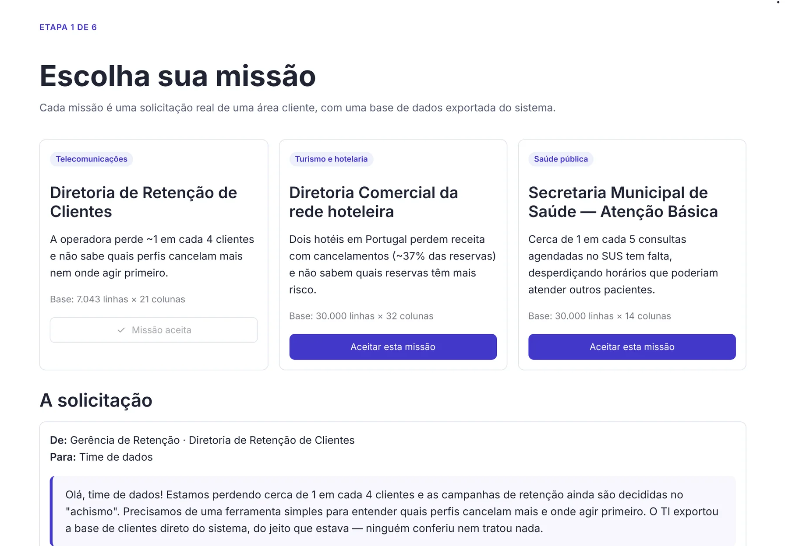
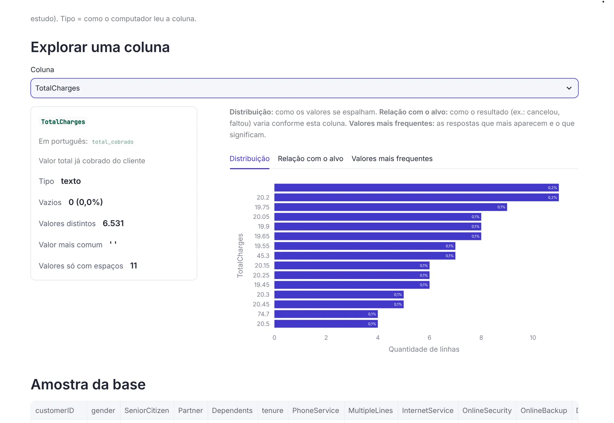
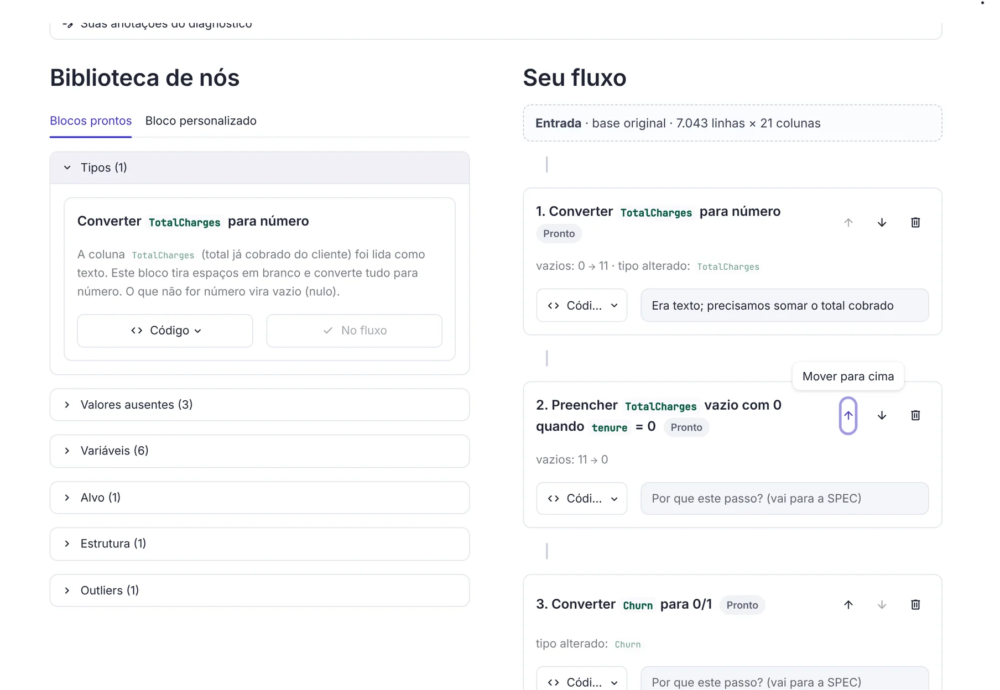
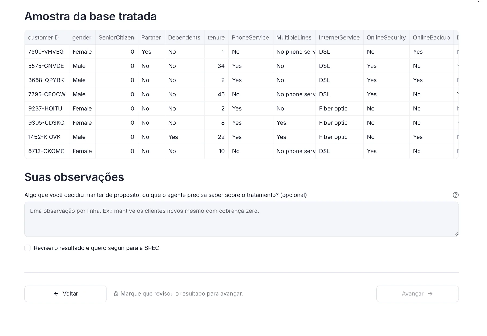
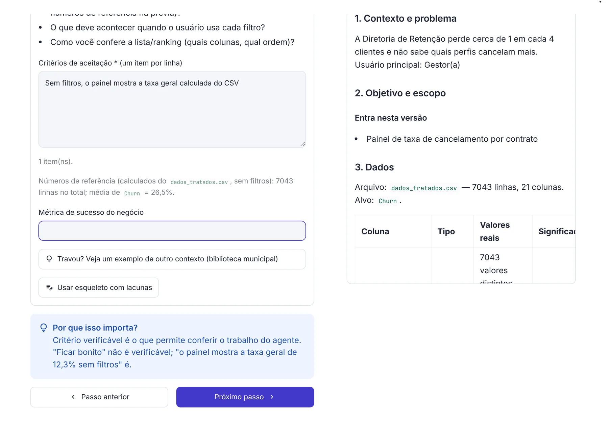
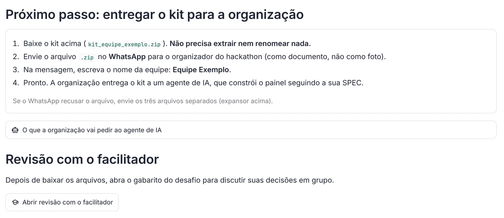

ACE · Inteligência de Negócios · Gestão da Informação · FAGEN – UFU
Da Spec ao App
Especifique, gere, verifique: dados e IA na prática
Prof. José Eduardo
Organização: Alexandre Marcelo Marques Filho, Gabriel Henrique Silva Ferreira, João Victor Tozoni, João Vitor Lima Magalhães e Pedro Humberto Bitencourt Nascimento
26/11/2026 (quinta-feira) · 19h às 22h30 · UFU, Bloco 1F, sala 256
spec-ao-app.streamlit.app
prêmios + certificado de participação
// 02_agenda.tree
Agenda da noite
noite_26-11/├── 19h00 abertura.md├── 19h10 apresentacao_sdd.md # o que vamos ver agora├── 19h45hackathon/# missão → dados → SPEC → painel├── 21h45pitches/# até 3 min por equipe├── 22h15 premiacao.md└── 22h30 encerramento
[CONFIRMAR COM A EQUIPE] horários da agenda
// 03_mercado_pede_agilidade.md
O mercado pede agilidade
A área de negócio quer o painel “para ontem”.
Os pedidos de dados chegam mais rápido do que o time consegue entregar.
Cada pedido passa por entender, tratar dados, construir e conferir.
BACKLOG · área de dados
● Painel de cancelamentos por região
● Indicadores de vendas para a diretoria
● Relatório de estoque semanal
● Taxa de faltas por unidade
● … e mais pedidos chegando
// 04_ia_no_desenvolvimento.md
A IA chegou ao desenvolvimento
66%
usam assistentes ou agentes de código
26%
já usam fluxos automatizados com agentes
48%
confiam na resposta da IA quando conseguem verificá-la
6,6%
confiam nela para decisões importantes
Usar IA virou rotina. Confiar exige poder conferir.
Termo popularizado em 2025: aceitar o código gerado sem olhar o que ele faz.
RESULTADO QUE “PARECE CERTO”
taxa_churn = 73,5%# contou quem NÃO cancelougrafico("receita_anual") # coluna que não existefiltro("regiao") # inventou um filtrovazios → média# regra que ninguém pediu
✕ 4 problemas— nenhum aparece na tela bonita
“Vibe coding”: termo cunhado por Andrej Karpathy em fev/2025 (MIT Technology Review, 16/04/2025; IBM, “What is vibe coding?”). Exemplo da direita ilustrativo.
// 06_o_que_e_sdd.md
Spec-Driven Development (SDD)
A especificação é a fonte da verdade. O código é consequência.
Em vez de “pedir para a IA”: especificar, gerar e verificar — e voltar para a spec quando algo muda.
EspecificarSPEC.md
Planejartarefas
Geraragente de código
Verificarcritérios
// 07_anatomia_da_spec.md
Anatomia de uma boa spec
# SPEC — Painel de Cancelamentos## 1. Contexto e problemapor que existe## 2. Usuárioquem vai usar## 3. Escopoentra × fica de fora## 4. Dadosdicionário de colunas## 5. Regras de negóciofórmulas e definições## 6. Restriçõeso que não pode fazer## 7. Critérios de aceitaçãocomo conferir
Dica
Escreva para alguém que não conhece o seu negócio: o agente só sabe o que estiver no arquivo.
// 08_spec_reduz_alucinacao.md
Cada seção fecha uma porta para a invenção
Escopo → não cria funcionalidade extra
Dados → não inventa coluna
Regras → não inventa fórmula
Critérios → dá para conferir o resultado
REGRA ESCRITA NA SPEC
taxa de churn =
clientes com Churn = 1
÷ total de clientes do filtro
Sem essa linha, o agente escolhe sozinho como calcular.
// 09_criterio_de_aceitacao.diff
Critério de aceitação: dá para conferir?
O painel deve ficar bonito e intuitivoSem filtros, o painel mostra a taxa geral calculada do CSVOs gráficos devem carregar rápidoAo filtrar por contrato, todos os gráficos se atualizamMostrar os clientes importantesA lista mostra customerID, contrato e mensalidade, do maior para o menor
Verificável = alguém consegue responder sim ou não.
// 10_sdd_no_mercado.md
SDD no mercado
GitHub Spec Kit
Kit open source para SDD: especificação → plano → tarefas. Funciona com Copilot, Claude Code, Gemini CLI e outros.
Kiro (AWS)
Ambiente de desenvolvimento com specs: requisitos, design e tarefas antes do código.
AGENTS.md · CLAUDE.md
Arquivos de instruções do projeto que os agentes leem no início de cada sessão.
Regras do Cursor
Regras de projeto versionadas em .cursor/rules, aplicadas ao agente.
Fontes: github.github.com/spec-kit · github.blog (Spec-driven development with AI) · kiro.dev · agents.md · code.claude.com/docs/en/memory · cursor.com/docs/rules
= dashboards e data apps mais rápidos e confiáveis.
// 12_qualidade_de_dados.py
Com IA, qualidade de dados importa ainda mais
# armadilha 1 — preencher vazios com a médiadf["total"] = df["total"].fillna(df["total"].mean()) # cliente novo “pagou” 2 mil# armadilha 2 — vazamento de dadosdf["taxa_pgto"] = churn médio por forma de pagamento # usa a própria resposta# armadilha 3 — apagar “outliers”df = df[z.abs() <= 1.5] # apaga clientes reais
Erro nos dados vira erro no painel — com cara de certo.
// 13_caso_algar_snowflake.md
Caso real: data apps na Algar
Snowflake Cortex Code
Agente de IA de programação da Snowflake que trabalha dentro da plataforma e entende o contexto dos dados da empresa.
[PEDRO: exemplo de projeto]
[PEDRO: tempo antes × depois]
[PEDRO: aprendizado]
Ferramentas como essa tornam o desenvolvimento mais ágil — e são apoiadas dentro da empresa.
Fonte: Snowflake, comunicado “Snowflake Unveils Cortex Code, An AI Coding Agent…” (03/02/2026), snowflake.com/en/news/press-releases.
Negar a IA é negar a ciência.
IA com método: especificar, verificar, assumir a responsabilidade.
// 15_boas_praticas_e_riscos.md
Boas práticas e riscos
Revise o que a IA gera
Rode, teste e compare com os critérios da spec.
Proteja dados sensíveis
Nada de dados pessoais ou sigilosos em ferramentas não aprovadas.
Governança
Siga as regras e as ferramentas aprovadas pela empresa.
Humano no controle
A IA sugere e gera; a responsabilidade pela entrega é sua.
// 16_agora_e_com_voces.md
Agora é com vocês
TERMINAL
$git checkout -b hackathon
Equipes montadas pela organização.
Cada equipe recebe uma missão de uma “área cliente”.
Entrega: um painel construído por um agente de IA a partir da sua SPEC.
// 17_tres_papeis.md
Três papéis
A área cliente
Tem o problema de negócio e a base de dados. Sabe o que dói, mas não sabe o que os dados dizem.
Você, analista
Investiga a base, decide o tratamento e escreve a SPEC. As decisões são suas.
O agente de código
Constrói a aplicação a partir da SPEC. Faz exatamente o que estiver escrito — nem mais, nem menos.
// 18_jornada/0-1_inicio_e_missao.md
spec-ao-app.streamlit.app

0 · Início → 1 · Missão
Equipe e missão
Digite o nome da equipe e clique em Começar.
Leia a solicitação da área cliente e aceite a missão.
Dá para ir além do que foi pedido.
// 18_jornada/2_diagnostico.md
spec-ao-app.streamlit.app · Diagnóstico

2 · Diagnóstico
Investigue antes de mexer
Raio-X, explorador de colunas e roteiro de perguntas.
Exemplo: TotalCharges é texto e tem 11 células só com espaços.
Anote o que encontrar.
// 18_jornada/3_pipeline.py
spec-ao-app.streamlit.app · Pipeline

3 · Pipeline
Monte bloco a bloco
Blocos prontos e blocos personalizados.
Há armadilhas de propósito.
# cada bloco mostra o código pandasdf["TotalCharges"] = pd.to_numeric(df["TotalCharges"].astype(str).str.strip(),errors="coerce")
// 18_jornada/4_revisao.md
spec-ao-app.streamlit.app · Revisão

4 · Revisão
Compare antes × depois
Linhas, colunas, vazios e tipos da base original e da tratada.
Não gostou? Volte ao fluxo e ajuste.
// 18_jornada/5_spec.md
spec-ao-app.streamlit.app · SPEC

5 · SPEC
Escreva a especificação
8 passos com perguntas-guia; os campos começam vazios.
A prévia do SPEC.md é montada ao lado.
Travou? Use o exemplo ou o esqueleto com lacunas.
// 18_jornada/6_exportar.md
spec-ao-app.streamlit.app · Exportar

6 · Exportar
Baixe o kit da equipe
dados_tratados.csv, planilha .xlsx e SPEC.md.
Dica: “Salvar ou retomar progresso”.
Dica: Glossário na barra lateral.
// 24_do_kit_ao_painel.sh
Do kit ao painel
TERMINALagente de código
$ unzip kit_equipe_exemplo.zip -d painel && cd painel
> Leia o arquivo SPEC.md e construa a aplicação…
● lendo SPEC.md — 7 seções, critérios de aceitação
● lendo dados_tratados.csv — 7.043 linhas
● criando app.py…
✓ streamlit run app.py → localhost:8501
Taxa geral de cancelamento26,5%
por tipo de contrato
Mensal42,7%
Anual11,3%
Bianual2,8%
Números calculados da base Telco do hackathon (7.043 clientes). Painel ilustrativo.
// 25_criterios_avaliacao.json
Como vamos avaliar
{"resultado_vs_missao": "o painel atende à proposta da missão?","tratamento_de_dados": "as decisões de tratamento são coerentes?","clareza_da_spec": "a SPEC é clara e verificável?","pitch": "a equipe conta bem a história?"}
[CONFIRMAR PESOS COM A EQUIPE]
// 26_regras_e_dicas.md
Regras da noite e dicas
Tempo de desenvolvimento até as 21h45[CONFIRMAR]
Pitch de até 3 minutos: problema → dados → decisões → demo → impacto.
Salve o rascunho de vez em quando.
Travou? Chame alguém da organização.
// 27_bora_construir.md
Bora construir?
spec-ao-app.streamlit.app
ACE em Inteligência de Negócios · Gestão da Informação · FAGEN – UFU · Prof. José Eduardo
Alexandre Marcelo Marques Filho · Gabriel Henrique Silva Ferreira · João Victor Tozoni · João Vitor Lima Magalhães · Pedro Humberto Bitencourt Nascimento
 GitHub Spec Kit
GitHub Spec Kit Kiro (AWS)
Kiro (AWS)